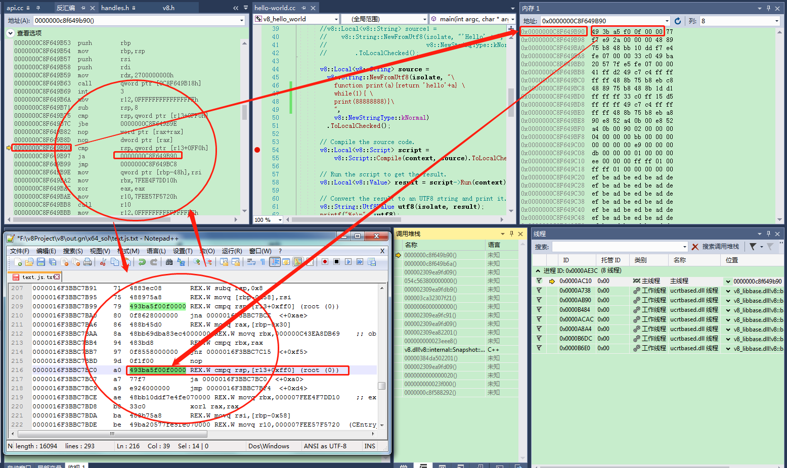

1.JavaScript解释型语言会经过以下几个步骤:
源代码===>预解释(读入代码块->语法分析->声明预处理->定义赋值)
===>执行(继续运行下一个代码块)===>结束
1.1 分词/词法分析: 将一连串字符打断成有意义的片段，称为 token.
1.2 解析: 将 token 的流 (数组) 转换为一个嵌套元素的树，综合地表示程序语言结构，这棵树称为 “抽象语法树” (AST)
1.3 代码生成: 将这个抽象语法树转换为可执行的代码. 生成的可执行代码根椐目标平台，而有不同
2.先看下简单点的过程
在前文的基础上，修改编译的脚本字符串，去加深理解V8js引擎的执行过程。
V8会把源码进行解析，然后生成对应平台上的汇编。
V8编译执行的简单流程（先不考虑JIT） jscode → AST → ByteCode → 动态生成对应平台机器码。
我们想在代码调试中去观察这一现象
2.1 直接调比较麻烦
因为进入JS虚拟机执行后，全是汇编了。 相当于调试一个虚拟机内部的东西。
这里采用取巧的办法，写个wille(1)死循环的JS。
v8::Local<v8::String> source =
v8::String::NewFromUtf8(isolate, "\
function print(a){return 'hello'+a} \
while(1){ \
print(88888888)}\
",
v8::NewStringType::kNormal)
.ToLocalChecked();
然后执行起来，走到死循环后，在中断，观察正在执行的汇编。
也就是图中左上角黄色箭头指示的地方，会在cmp xxx 和 ja xxx 死循环。

2.2 用D8针对同样的JS进行对比
生成的机器码（均是X64平台），见左下角notepad++所示。
与右上角的实际运行的机器码对比，确实当前正在死循环的机器码，就是我们的js代码对应生成的。
//相关源码和参数：
d8.exe --print-bytecode --print-code --module text.js //把js文件生成字节码和机器码
function print(a){return 'hello'+a}
while(1){ print(88888888)}
2.3 由此得出调试结论
JS的代码最终在经过AST bytecode后，最终是被动态的生成了对应平台的机器码。然后动态的执行。
执行的时候，在进入jS“内部虚拟机”执行后，堆栈的最终意义不大，看起来不直观了，都是纯汇编。（右下角对应起线程和堆栈）。
2.4 堆上内存执行属性
Windows上的PE文件区分代码段（一般在.text section里）与数据段（一般在.data section和.rdata section）。Windows Vista和Windows 7 win10上打开DEP后，会进行系统级的监测，限制数据段执行代码。开启DEP后，数据段内存被认为是不可执行的，分配的空间必须标有PAGE_EXECUTE、PAGE_EXECUTE_READ、PAGE_EXECUTE_READWRITE或者PAGE_EXECUTE_WRITECOPY属性才可以执行。系统会认为可执行代码就应该保存到代码段，出现异常直接报错。此时需要使用VirtualAllocVirtualAlloc修改对应内存的属性。
冯·诺依曼体系结构的机器上，存储器既可以用于保存代码，也可以用于保存数据。代码和数据其实没有明显的界限，代码就是数据，数据可以看作代码来执行。在堆上和数据段里放代码，就像有些时候C的switch...case语句会被编译为基于表的跳转，而这个跳转表就夹杂在指令序列中一样。引申开来，有时候我们会希望根据运行时的某些特定条件来动态生成些效率较高的、特化的代码，而不是使用通用但效率较低的代码，这个时候就需要用到动态代码生成技术。 例如把正则表达式动态编译为紧凑高效的机器码toka。Google V8里面就有这样的正则表达式引擎编译器。
针对本次的调试例子。
当前运行的RIP（EIP）是处在堆上，其内存属性是什么?用windbg分析如下。
当前运行的RIP，起对应的机器码是 49 3b a5 f0 ****
其内存属性是PAGE_EXECUTE_READ。

2.5 其它可以继续调试分析的
以上只是最简单的流程分析，更复杂的分析还有以下:
运行时性能数据收集
JIT优化等
JS回调外部注入函数
隐藏其中的GC和内存分布管理
2.6 一个其他的例子
演示动态生成机器码然后执行
//其他类似的例子 注意开启DEP以后会执行失败。
#include <stdio.h>
typedef int (*puts_ptr)(const char*);
typedef void (*myfunc_ptr)(puts_ptr);
/*
void foo(puts_ptr p) {
p("greetings from generated code!");
}
*/
/* code as string in data section:
offset | bytes (in hex) | mnemonics
00 | 55 | push EBP
01 | 8BEC | mov EBP, ESP
03 | E8 00000000 | call next instruction
08 | 58 | pop EAX
09 | 83C0 0D | add EAX, 0D
12 | 50 | push EAX
13 | FF55 08 | call dword ptr [EBP + 8]
16 | 83C4 04 | add ESP, 04
19 | 5D | pop EBP
20 | C3 | ret
*/
int main() {
myfunc_ptr pMyfunc;
puts_ptr pPuts = &puts;
const char* code = "\x55\x8B\xEC\xE8\x00\x00\x00\x00"
"\x58\x83\xC0\x0D\x50\xFF\x55\x08"
"\x83\xC4\x04\x5D\xC3"
"greetings from generated code!";
pMyfunc = (myfunc_ptr)code;
pMyfunc(pPuts);
return 0;
}
开启对应进程的DEP后，会无法正常运行


3 总结
在c++程序中，调用V8相关接口，先把脚本准备（解析编译） 好。
最后会调用脚本接口run，实际上就是在本线程中继续执行，直接通过stud函数入口，调用机器码（堆上的机器码）。
然后在js的虚拟机环境中，运行生成的机器码，返回c++前，由js虚拟机管理堆栈。（实际上类似于2.6 中一种动态生成机器码，运行shellcode）
后续可以继续摸索:
1.这里应该是有调试机制的，因为chrome开发者工具是可以单步调试的。
2.js本身应该也是支持调试特性。